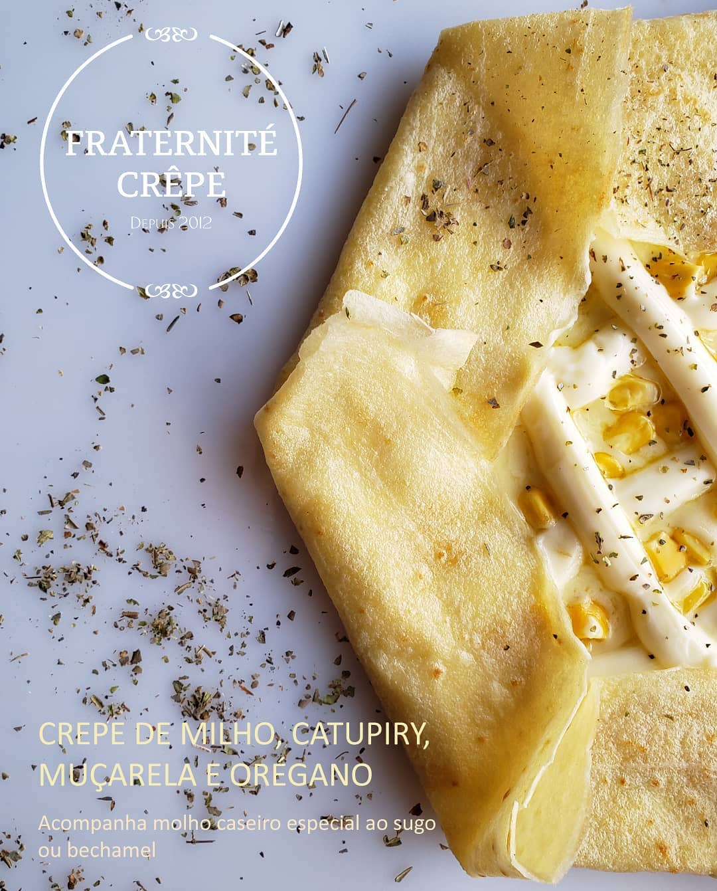
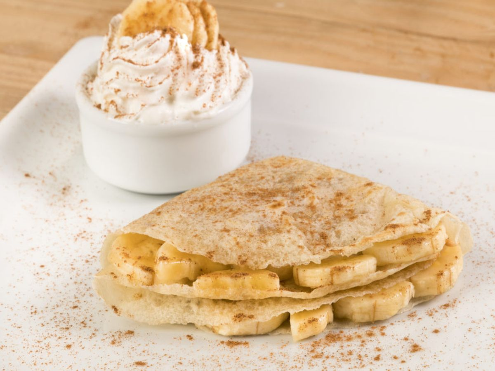
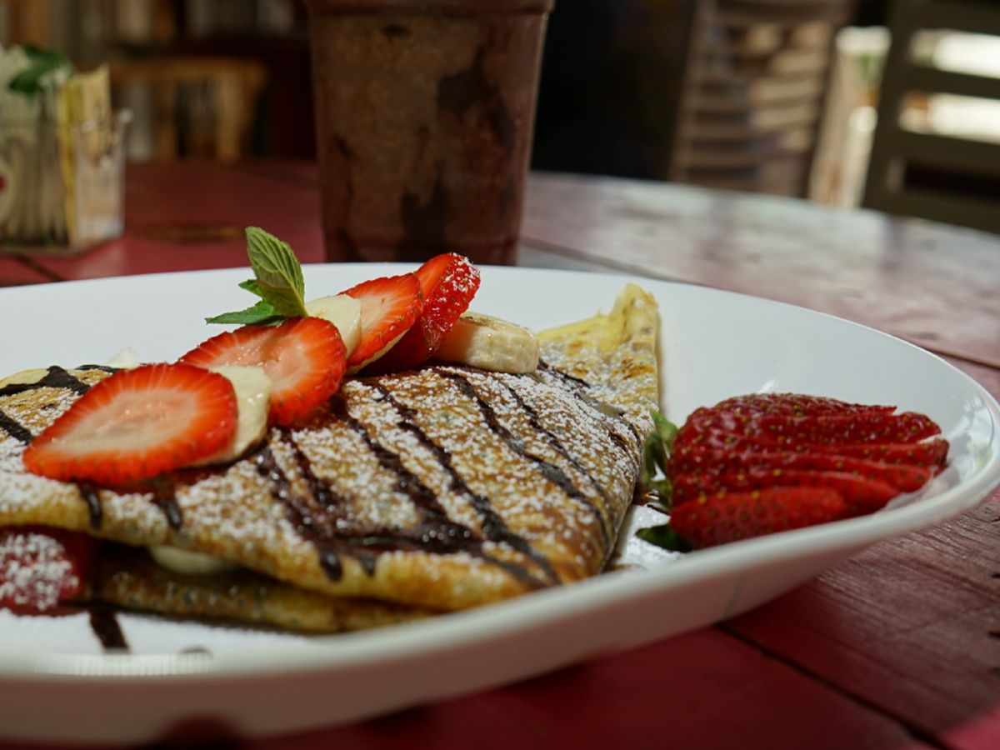
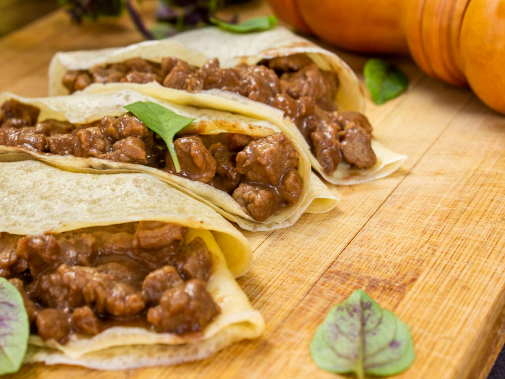
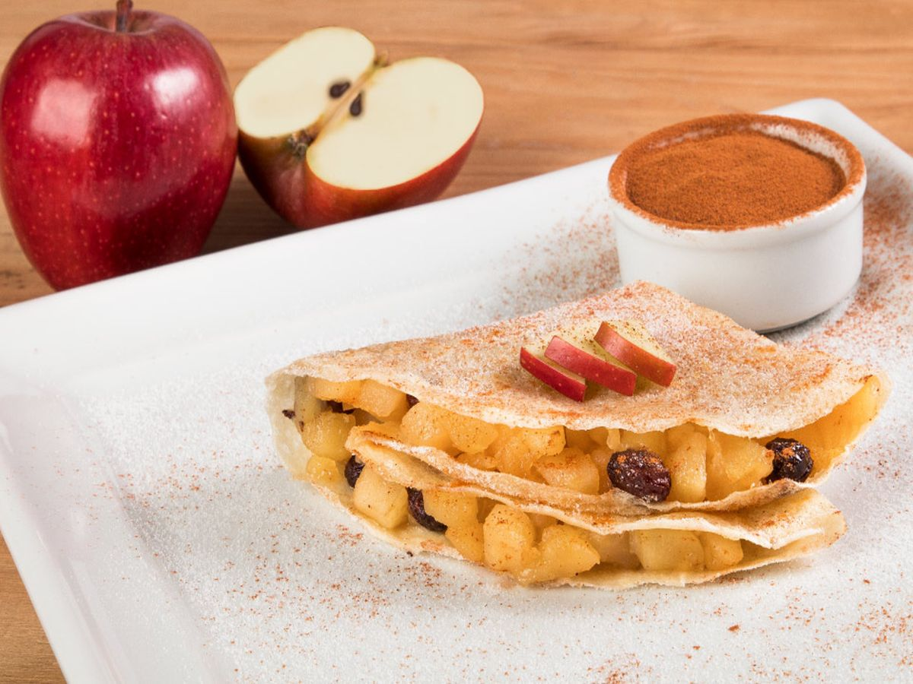

Cardápios
Os cardápios da Fraternité Crêpe estão com novos sabores! Os crepes estão ainda mais requintados para agradar os paladares mais gourmets e também ganharam ingredientes que seguem a tendência da culinária saudável. Agora os cardápios apresentam entrada com tartines recheadas; acompanhamento com molhos caseiros para os crepes salgados e caldas para os crepes doces; além de um cafezinho saboroso com petit four de encerramento.

Cardápio Marselha

Novo cardápio Marselha! Destaque para os crepes de presunto e tomate; frango e bacon; três queijos; e os clássicos de chocolate com morango; e doce de leite com banana.
Ler maisCardápio Premier

Novo cardápio Premier! Destaque para os crepes de alcatra ao molho madeira; frango e bacon; três queijos; chocolate branco e morango; os clássicos de chocolate com morango; e doce de leite com banana; e o famoso crepe de Nutella.
Ler maisCardápio Paris

Novo cardápio Paris! Destaque para os crepes de camarão ao vinho branco; alcatra ao molho madeira; três queijos; doce de leite e sorvete; chocolate branco e morango; os clássicos de chocolate com morango; e doce de leite com banana; e o famoso crepe de Nutella.
Ler maisCardápio Le Grand

Novo cardápio Le Grand! Destaque para os crepes de mignon; camarão ao vinho branco; carne seca; frango e rúcula; três queijos; o delicioso crepe Suzette flambado com licor Grand Marnier; o clássico de chocolate com morango; e o famoso crepe de Nutella.
Ler mais